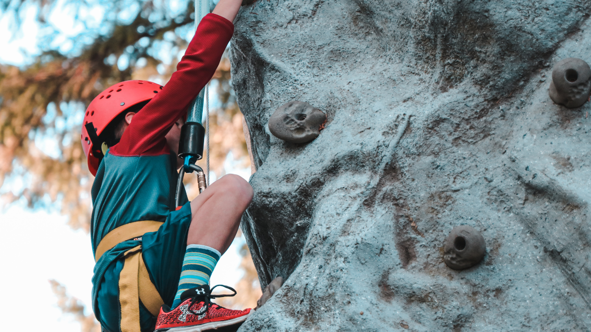
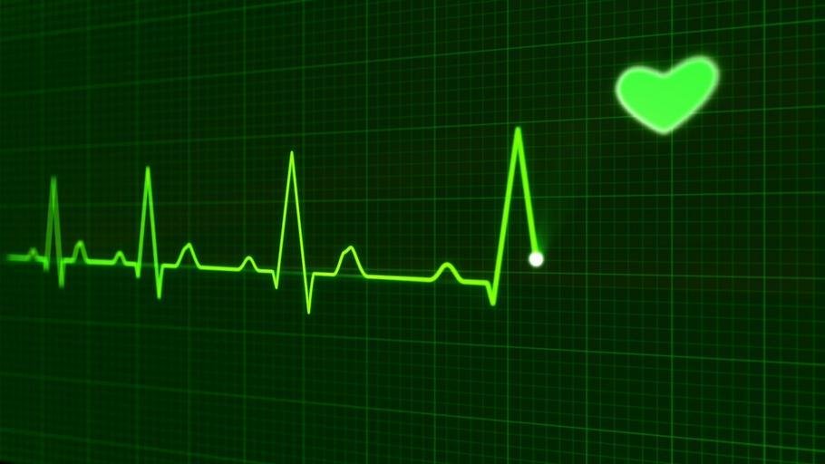
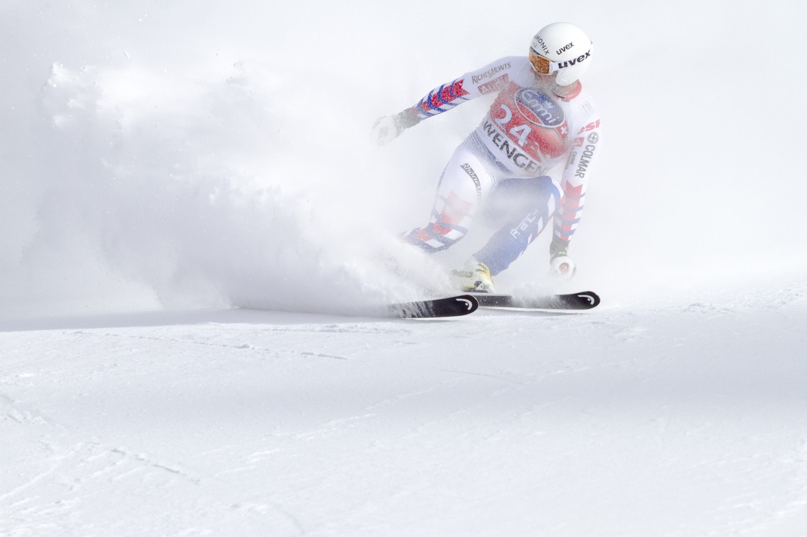
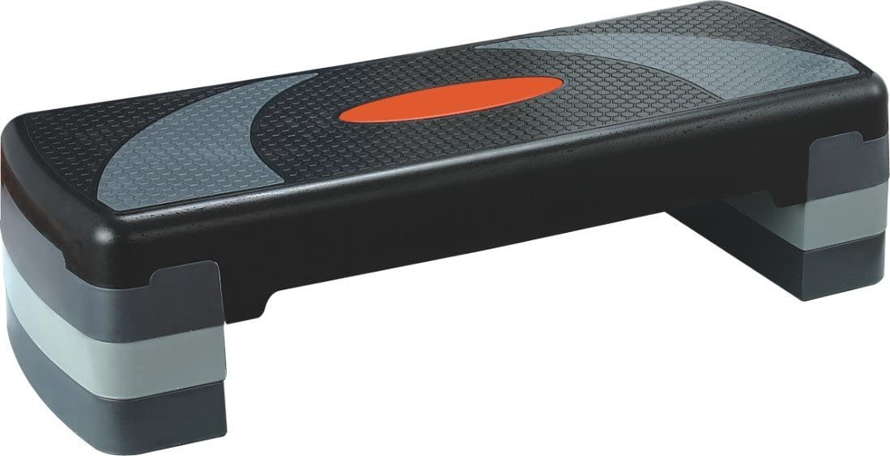
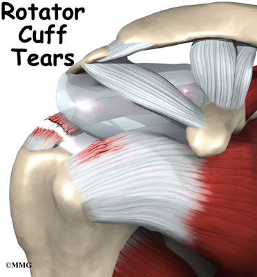
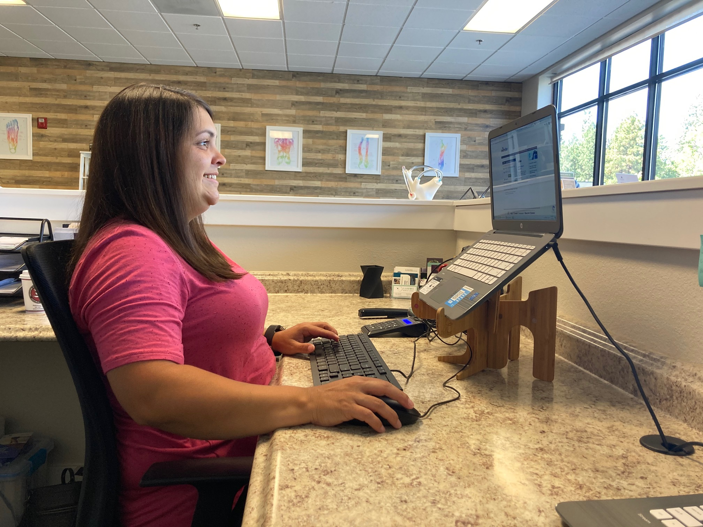
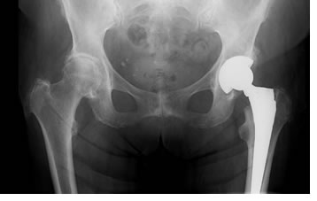
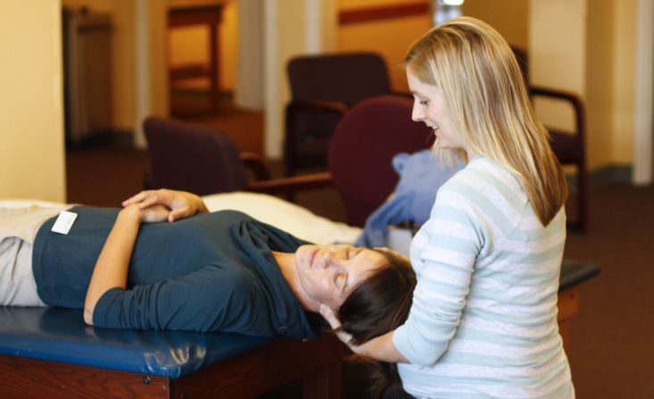

Evidence-based health and fitness content from the team at Resolve Physical Therapy in Bend, Oregon. Our Doctors of Physical Therapy share practical advice on injury prevention, exercise technique, recovery strategies, and the latest in rehabilitation science to help you move better and feel stronger.

Common Climbing Injuries and How to Prevent Them
Four common climbing injuries including lateral epicondylitis, shoulder impingement, and annular ligament damage, with prevention strategies from our physical therapy team.

Understanding Neurological Physical Therapy
How neurological physical therapy harnesses neuroplasticity to help people with Parkinson's disease, stroke, MS, and other neurological conditions regain movement and function.

Simple Ways to Improve Your Heart Health
In honor of American Heart Month, practical strategies for improving cardiovascular health through exercise, movement, and lifestyle habits recommended by physical therapists.

Strength Training for Skiing: Exercises to Stay on the Mountain
Seven targeted exercises to build the leg strength, core stability, and endurance you need for a full day on the mountain without injury.

Holiday Gift Guide: Home Exercise Equipment for Active People
Physical therapist-approved home exercise equipment recommendations, from foam rollers and resistance bands to balance pads and aerobic steps.

Do I Have a Rotator Cuff Tear? 5 Signs to Watch For
Five warning signs that may indicate a rotator cuff tear, plus why up to 80% of rotator cuff injuries improve with nonsurgical treatment including physical therapy.

Check Your Posture: A Simple Guide to Better Alignment
A physical therapist's guide to assessing your posture, identifying common alignment issues, and simple correction exercises you can do at home or work.

The Role of Imaging in Physical Therapy
When imaging is helpful, when it is not necessary, and how physical therapists use X-rays, MRIs, and other diagnostic tools to guide your treatment plan.

Check Your Balance: Simple Tests You Can Do at Home
Easy balance tests you can perform at home, what your results might mean, and when to see a physical therapist for a professional balance assessment.
Ready to Move Better?
Whether you are recovering from an injury, training for a race, or just want to feel stronger in your daily life, our team is here to help. No physician referral required in Oregon.